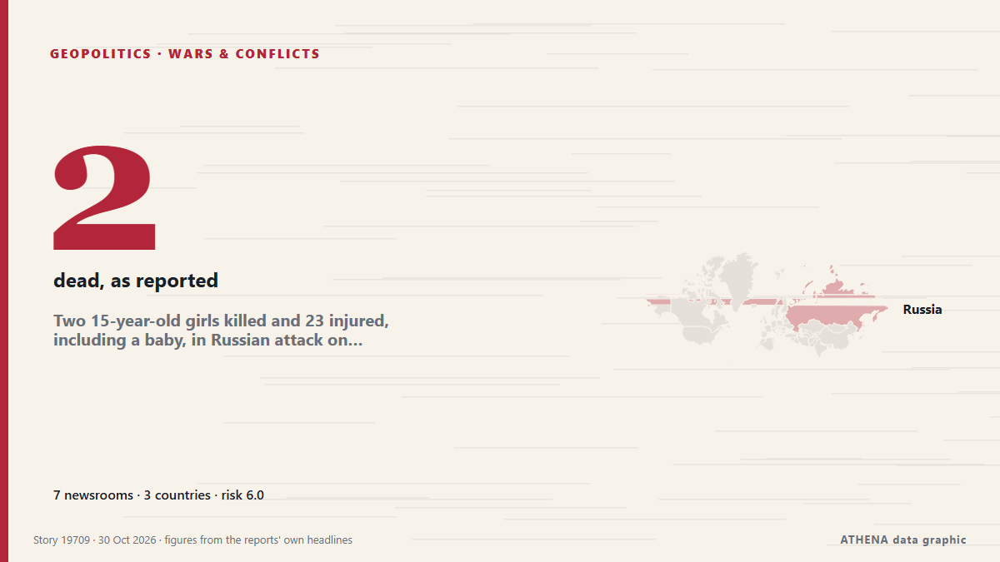

Two 15-year-old girls killed and 23 injured, including a baby, in Russian attack on central Chernihiv

A daytime Russian missile and drone strike on central Chernihiv has killed two 15-year-old girls and injured 23 people, including four children and young people, on crowded streets. from Ukrainska Pravda (English)
Reported independently by 7 outlets in 3 countries since 22 Oct, first by Ukrainska Pravda (English); coverage is at its peak. ATHENA rates the risk elevated (6.0/10), driven mainly by the severity of the harm described and the quality of the evidence. Confidence is 78% (high), with 7 independent outlets corroborating it and an average source reliability of 80%. Newsrooms by country: Ukraine (18), Azerbaijan (1), France (1). Coverage: 22 Oct to 30 Oct, 196 hours.
Why it matters: Security and diplomatic developments can shift alliances, trade and markets well beyond the countries directly involved.
What changed: 6 new reports from 4 newsrooms in the 24 hours to 30 Oct.
At a glance
Selected, scored and written by ATHENA's published methodology. No editor intervenes in individual events. How this is produced ›
| 22 Oct 06:44 UTC | 2 |
|---|---|
| 22 Oct 18:44 UTC | 1 |
| 23 Oct 06:44 UTC | 3 |
| 23 Oct 18:44 UTC | 0 |
| 24 Oct 06:44 UTC | 2 |
| 24 Oct 18:44 UTC | 0 |
| 25 Oct 06:44 UTC | 0 |
| 25 Oct 18:44 UTC | 1 |
| 26 Oct 06:44 UTC | 0 |
| 26 Oct 18:44 UTC | 0 |
| 27 Oct 06:44 UTC | 2 |
| 27 Oct 18:44 UTC | 0 |
| 28 Oct 06:44 UTC | 0 |
| 28 Oct 18:44 UTC | 2 |
| 29 Oct 06:44 UTC | 4 |
| 29 Oct 18:44 UTC | 1 |
| 30 Oct 06:44 UTC | 2 |
| 22 Oct 07:13 UTC | 4.2 |
|---|---|
| 22 Oct 09:09 UTC | 5.0 |
| 30 Oct 11:13 UTC | 5.6 |
| 30 Oct 11:13 UTC | 6.0 |
Why these numbers
Importance
Risk
Confidence
The reporting — who reported it, and when
headline as published · opens the original- Ukrainska Pravda (English) · UkraineRussians strike Chernihiv twice with Banderol drone missiles, killing one person and injuring another
- Ukrinform (English) · UkraineRussian strikes hit 12 Ukrainian regions overnight, killing two and injuring 34
- Kyiv Post · UkraineRussia Strikes Crowded Market in Lozova, Killing 2, Wounding 36
- Ukrainska Pravda (English) · UkraineRussian forces attack businesses in Chernihiv: 1 killed and 25 injured
- Ukrinform (English) · UkraineRussian forces attack enterprise in Chernihiv, leaving one killed, 25 injured
- Kyiv Independent · UkraineRussian daytime attack on Chernihiv civilian businesses kills 1, injures at least 25
- Ukrinform (English) · UkraineOne killed, 18 injured in Russian attacks in Chernihiv region over past day
- Ukrinform (English) · UkraineRussian forces strike Chernihiv, fire breaks out, two injured
- Ukrainska Pravda (English) · UkraineTwo injured in Russian attacks on Chernihiv Oblast, warehouses and grain store ablaze – photos
- Ukrainska Pravda (English) · UkraineRussian strikes injure six people, including child, in Chernihiv Oblast
- Ukrinform (English) · UkraineEducational facility in Chernihiv Region attacked with fiber-optic FPV drones
- Kyiv Post · UkraineRussian Missile Strikes Chernihiv Animal Clinic, Wounds 3 Women, Kills Dog
- Ukrinform (English) · UkraineRussian strike damages veterinary center in Chernihiv, killing dog and injuring three women
- Ukrainska Pravda (English) · UkraineTwo 15-year-old girls killed and 23 injured, including a baby, in Russian attack on central Chernihiv
- Ukrinform (English) · UkraineRussian drone attack on central Chernihiv kills two teenage girls, injures 11
- AzerNews · AzerbaijanRussian drone strike on Chernihiv kills two, injures 23
- Ukrinform (English) · UkraineAttack on Chernihiv city center leaves two dead and raises injury toll to 25
- Euronews English · FranceUkraine: Russian strike kills two teenage girls in Chernihiv
- Ukrainska Pravda (English) · UkraineRussian forces strike business in Chernihiv
- Ukrinform (English) · UkraineRussian forces strike facility in Chernihiv